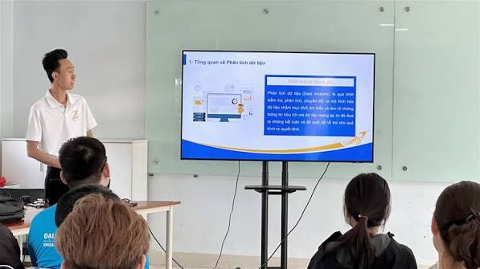

Our Mission
The DataTech Club focuses on analyzing real-world datasets and exploring machine learning algorithms. We provide a professional environment for members to solve technical challenges and develop system optimization solutions.
Membership and Benefits
Who Can Join
We welcome university students and individuals with a strong interest in data processing and software development. Whether you study technology or business analytics, you are eligible to become a member as long as you are dedicated to data-driven problem solving.
Why You Should Join
Participation provides direct exposure to practical technology projects. You will develop root-cause analysis skills, strengthen your algorithmic foundations, and build a technical portfolio for your career.
Photo Gallery

A member presenting their data visualization project during our monthly showcase.